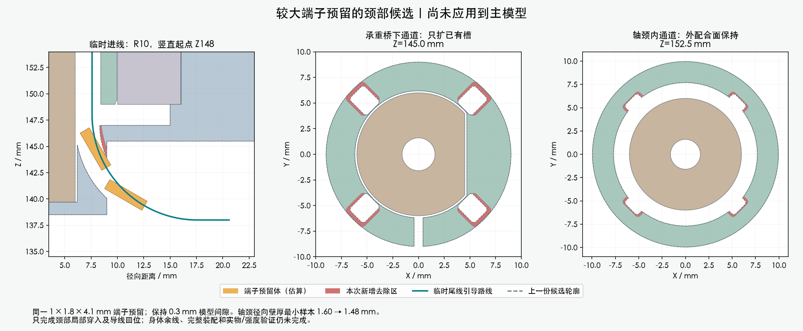

使用同一 1×1.8×4.1 mm 估算端子预留，保持 0.3 mm 间隙。临时弯道改为 R10、竖直起点上移1mm，端子通过后导线回到原 R8 路线。

红色为相对上一份未采用候选新增去除的区域；真实硬件及轴承位置不动，没有增加打印件。
| 项目 | 证据范围 |
|---|---|
| 连续穿入与颈部导线回位 | 四方向，各410个有界区间 |
| 间隙下界 | 端子约0.308mm；导线约0.306mm |
| 障碍物 | 209源实体＋29对插预留＋14根既有固定线 |
| 相互间隙与网格 | 6组两两检查通过；两件保存网格闭合、连通、无退化面 |
| 轴颈壁厚代价 | 12240条径向样本，最小值1.601→1.479mm；强度未验证 |
身体余线和PH胶壳尚未完整放置，暂时多占的2.142mm需要从松散尾线供给。整头/上壳顺序、扎带、端子入壳和其余跨关节线路仍需完成；这里没有释放裁线长度。
下一步检查身体端最后插接及全长余线；结构变化在完整候选可审阅后再确认。厂家压接成品外形、PA12配合、承载和寿命仍需实物。